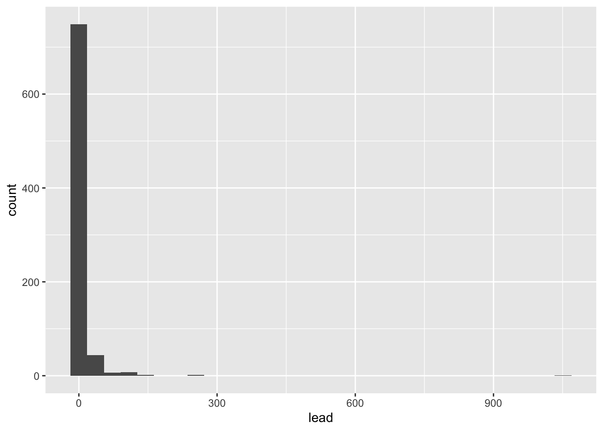
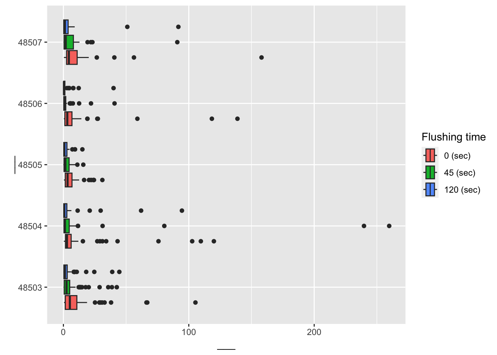

This is an updated version of the previous application exercise. The data analysis exercises R the same, but workflow steps have been updated for a Git and GitHub based workflow.
Goals
By the end of this application exercise you will
meet the full computational toolkit for the course
practice using glimpse(), names(), nrow(), ncol(), count()
define and compute various statistics
begin to gain familiarity with making data visualizations with ggplot()
We will do this using water lead content data from Flint, MI. The following paragraph will be useful in evaluating the lead amount values we’ll see in the dataset.
While there is no completely safe amount of lead consumption, the limit allowed by the Lead and Copper Rule (LCR) of 1991 is 15 parts per billion (ppb). If this is exceeded in more than 10% of homes tested (or if the 90th percentile value of the total sample is above 15 ppb), action is required. And to make sure problems are caught, sampling for lead in water is supposed to target the “worst-case” homes – those in areas served by lead pipes.
Back to analysis
Load packages
We’ll use the tidyverse package for analysis, which offers functionality for data import, wrangling, visualization, and more.
library(tidyverse)
── Attaching core tidyverse packages ──────────────────────── tidyverse 2.0.0 ──
✔ dplyr 1.1.2 ✔ readr 2.1.4
✔ forcats 1.0.0 ✔ stringr 1.5.0
✔ ggplot2 3.4.3 ✔ tibble 3.2.1
✔ lubridate 1.9.2 ✔ tidyr 1.3.0
✔ purrr 1.0.2
── Conflicts ────────────────────────────────────────── tidyverse_conflicts() ──
✖ dplyr::filter() masks stats::filter()
✖ dplyr::lag() masks stats::lag()
ℹ Use the conflicted package (<http://conflicted.r-lib.org/>) to force all conflicts to become errors
Loading this package prints out a message. What does this message mean? How can we suppress the message from the output?
Load data
The read_csv() function can be used for reading CSV (comma separated values) files. The file we’re reading is called flint with the suffix (.csv) which indicates its file type. The file is in the data folder.
Before reading in the file, go to the data folder in the Files pane to confirm that it is, indeed, there. Then, read the file by running the code chunk below by clicking on the green triangle icon on the code chunk.
flint <-read_csv("data/flint.csv")
Rows: 813 Columns: 5
── Column specification ────────────────────────────────────────────────────────
Delimiter: ","
chr (1): draw
dbl (4): id, zip, ward, lead
ℹ Use `spec()` to retrieve the full column specification for this data.
ℹ Specify the column types or set `show_col_types = FALSE` to quiet this message.
One of two things may have happened:
The file was read successfully and you now see a dataset called flint in your Environment pane.
The file was not read successfully and you see an error Error in read_csv("data/flint.csv") : could not find function "read_csv".
If (1) happened, great!
If (2) happened, let’s troubleshoot first before continuing.
Data dictionary
The following variables are in the flint data frame:
id: sample ID number (identifies the home)
zip: ZIP code in Flint of the sample’s location
ward: ward in Flint of the sample’s location
draw: which time point the water was sampled from
lead: lead content in parts per billion (ppb)
Populations and samples
We want to learn about the population using a sample.
In the case we want to learn about the lead content in all of Flint, MI homes but only have available water readings from a sample of homes (our data set).
Exercise 1: Look at the data, how many observations are there? How many variables?
# add code here
Render, commit, and push, with an appropriate commit message like “Finished Exercise 1”. Make sure that you commit and push all changed documents and your Git pane is completely empty before proceeding.
Frequencies
Let’s count() to find the number of different time points water was sampled with the count() function.
The first argument is flint: the data frame
The second argument is draw: the variable
count(flint, draw)
# A tibble: 3 × 2
draw n
<chr> <int>
1 first 271
2 second 271
3 third 271
We can achieve the same result with the following “piped” operation as well.
The first line is flint: the data frame
Then the pipe operator, read as “and then”, which places what comes before it as the first argument of what comes after it
The second line is count(draw)
flint |>count(draw)
# A tibble: 3 × 2
draw n
<chr> <int>
1 first 271
2 second 271
3 third 271
We can use a similar approach to fund out how many unique homes are in the data set:
Exercise 2: How many samples were taken from each zip code?
# add code here
Exercise 3: Which ZIP code had the most samples drawn? Hint: See the help for count.
# add code here
Render, commit, and push, with an appropriate commit message like “Finished exercises 2 and 3”. Make sure that you commit and push all changed documents and your Git pane is completely empty before proceeding.
Summarization
What is a statistic? It’s any mathematical function of the data. Sometimes, a statistic is referred to as “sample statistic” or “summary statistic”, since you compute it from a sample (the observed data) and not the entire population.
Measures of central tendency
mean
median
mode
Measures of spread
variance
standard deviation
range
quartiles
inter-quartile range (IQR)
Order statistics
quantiles
minimum (0 percentile)
median (50th percentile)
maximum (100 percentile)
… and any other arbitrary function of the data you can come up with!
Exercise 4: Compute each of these statistics for lead ppb.
# add code here
Render, commit, and push, with an appropriate commit message. Make sure that you commit and push all changed documents and your Git pane is completely empty before proceeding.
Plotting
Histograms
Let’s take a look at the distribution of lead content in homes in Flint, MI.
ggplot(flint, aes(x = lead)) +geom_histogram()
`stat_bin()` using `bins = 30`. Pick better value with `binwidth`.

We can make this plot look nicer/more useful by adjusting the number of bins and zooming into the x-axis.
Exercise 6: Add one more layer which overlays the median, in a different color.
# add code here
Box plots
Next, let’s narrow our focus to the zip codes 48503, 48504, 48505, 48506, and 48507 and observations with lead values less than 1,000 ppb.
flint_focus <- flint |>filter(zip %in%48503:48507& lead <1000)
Exercise 7: Below are side-by-side box plots for the three flushing times in each of the five zip codes we considered. Add x and y labels; add a title by inserting title = "title_name" inside the labs() function.
ggplot(data = flint_focus, aes(y =factor(zip), x = lead)) +geom_boxplot(aes(fill =factor(draw))) +labs(x ="___", y ="___", fill ="Flushing time") +scale_fill_discrete(breaks =c("first", "second", "third"),labels =c("0 (sec)", "45 (sec)", "120 (sec)") )

Render, commit, and push, with an appropriate commit message. Make sure that you commit and push all changed documents and your Git pane is completely empty before proceeding.
Exercise 8: Add labels for x, y, a title, and subtitle to the code below to update the corresponding plot.
Exercise 9: What is the difference between the two plots? What are the advantages and disadvantages to each plot?
[Add your answer here]
Render, commit, and push, with an appropriate commit message. Make sure that you commit and push all changed documents and your Git pane is completely empty before proceeding. Confirm that your output looks as expected on your GitHub repository.
Kelsey J. Pieper, et. al. Evaluating Water Lead Levels During the Flint Water Crisis. Edwards Environmental Science & Technology 2018 52 (15), 8124-8132 doi: https://doi.org/10.1021/acs.est.8b00791.